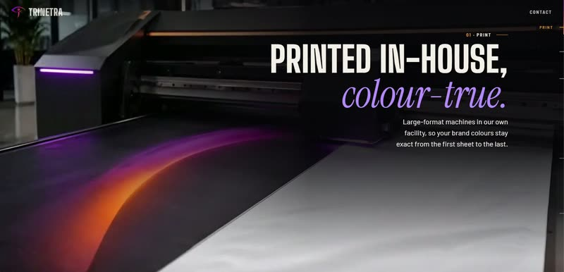
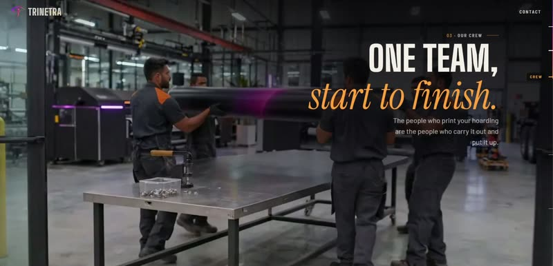

Advertising & branding agency
A concept website for an advertising, branding and signage agency.
The business and its problem
A branding and signage agency.
It needed to show how a project goes from idea to finished hoarding.
My idea
A scroll film that walks through a real client job, step by step.
Key decisions
- The job, in numbered stepsThe film moves through the work in order (printing in-house, the crew, the install) so a client sees exactly what they are paying for.
- Bold, outdoor-scale typeTall condensed headlines with a script accent, in the brand's purple and amber: type that would hold up on a billboard.
- It ends where the client wants to beThe last scene is the finished hoarding lit up over the city at night, with two clear next steps: plan your hoarding, or see sample work.
Stills

